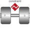

RevolutePlanarLoopConstraintRevolute joint that is described by 2 positional constraints for usage in a planar loop (the ambiguous cut-force perpendicular to the loop and the ambiguous cut-torques are set arbitrarily to zero) |

|
Information
This information is part of the Modelica Standard Library maintained by the Modelica Association.
Joint where frame_b rotates around axis n which is fixed in frame_a and where this joint is used in a planar loop providing 2 constraint equations on position level.
If a planar loop is present, e.g., consisting of 4 revolute joints where the joint axes are all parallel to each other, then there is no unique mathematical solution if all revolute joints are modelled with Joints.Revolute and the symbolic algorithms will fail. The reason is that, e.g., the cut-forces in the revolute joints perpendicular to the planar loop are not uniquely defined when 3-dim. descriptions of revolute joints are used. Usually, an error message will be printed pointing out this situation. In this case, one revolute joint in the loop has to be replaced by model Joints.RevolutePlanarLoopCutJoint. The effect is that from the 5 constraints of a 3-dim. revolute joint, 3 constraints are removed and replaced by appropriate known variables (e.g., the force in the direction of the axis of rotation is treated as known with value equal to zero; for standard revolute joints, this force is an unknown quantity).
Parameters (4)
| animation |
Value: true Type: Boolean Description: = true, if animation shall be enabled (show axis as cylinder) |
|---|---|
| n |
Value: {0, 0, 1} Type: Axis Description: Axis of rotation resolved in frame_a (= same as in frame_b) |
| cylinderLength |
Value: world.defaultJointLength Type: Distance (m) Description: Length of cylinder representing the joint axis |
| cylinderDiameter |
Value: world.defaultJointWidth Type: Distance (m) Description: Diameter of cylinder representing the joint axis |
Inputs (2)
| cylinderColor |
Default Value: Modelica.Mechanics.MultiBody.Types.Defaults.JointColor Type: Color Description: Color of cylinder representing the joint axis |
|---|---|
| specularCoefficient |
Default Value: world.defaultSpecularCoefficient Type: SpecularCoefficient Description: Reflection of ambient light (= 0: light is completely absorbed) |
Connectors (2)
Components (3)
| world |
Type: World |
|
|---|---|---|
| R_rel |
Type: Orientation Description: Dummy or relative orientation object from frame_a to frame_b |
|
| cylinder |
Type: Shape |
Used in Examples (3)
|
Modelica.Mechanics.MultiBody.Examples.Loops Model of one cylinder engine |
|
|
Modelica.Mechanics.MultiBody.Examples.Loops Model of one cylinder engine with gas force and preparation for assembly joint JointRRP |
|
|
Modelica.Mechanics.MultiBody.Examples.Loops Planar four bars mechanism with one kinematic loop (with RevolutePlanarLoopConstraint joint) |
Used in Components (1)
|
Modelica.Mechanics.MultiBody.Examples.Loops.Utilities Cylinder with rod and crank of a combustion engine |